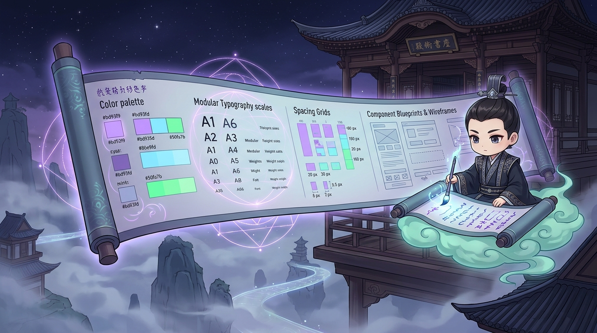

Awesome DESIGN.md — Chuẩn hóa hệ thống thiết kế cho Coding Agent
Bộ sưu tập tài liệu DESIGN.md được tuyển chọn từ hơn 20 công ty công nghệ có ngôn ngữ thiết kế xuất sắc nhất thế giới như Linear, Stripe, Apple, Claude, Supabase. Giúp AI coding agent nắm bắt tức thì DNA thương hiệu để viết mã UI đồng bộ 100%.
Mục đích chính
Khóa Chặt DNA Thiết Kế
Đặt 1 file Markdown ở gốc repo để ép AI tuân thủ đúng màu, font và khoảng cách.
Thư viện sẵn có
20+ Thương hiệu lớn
Linear, Stripe, Apple, Claude, Supabase, Vercel, ClickHouse...
Kích thước file
Siêu nhẹ (~60 dòng)
Chỉ tốn ~400 token, không làm nghẽn bộ nhớ context của agent.
Công cụ nạp nhanh
stitch-design CLI
npx stitch-design add linear

Đặc tả hệ thống thiết kế (Design Tokens Specification): Tệp
DESIGN.md đóng vai trò tài liệu quy chuẩn kỹ thuật cho coding agent, cung cấp giá trị HEX bảng màu Dracula, thang đo kiểu chữ (typography scale) và lưới khoảng cách đồng bộ.1. DESIGN.md là gì và tại sao AI Agent cần nó?
Nếu README.md dành cho con người và AGENTS.md dành cho chỉ thị hành vi, thì DESIGN.md là "cuốn kinh thánh giao diện" dành riêng cho AI coding agent. Khi bạn đặt file này ở gốc dự án, agent sẽ tự động đọc bảng tokens này trước khi xuất mã HTML, CSS hoặc React:
2. Bảng đối chiếu 5 Hệ thống Thiết kế kinh điển
| Thương hiệu | Đặc trưng thẩm mỹ | Quy tắc Design Tokens | Ứng dụng tối ưu cho |
|---|---|---|---|
| Linear | Dark mode chính xác cao, phím tắt trước tiên (Keyboard-first), sắc nét từng điểm ảnh. | Nền #0f1015, viền siêu mảnh 1px #232530, phím tắt viền nổi, bo góc 6px–8px. |
Bảng điều khiển công việc (Issue tracker), công cụ quản trị kỹ thuật, developer tooling. |
| Stripe | Mềm mại, thanh lịch, uy tín cao về tài chính, chuyển màu gradient đa chiều mượt mà. | Nền sáng #f6f9fc, chữ xám xanh #425466, bóng mờ khuếch tán đa tầng (diffused elevation). |
Cổng thanh toán, trang bảng giá SaaS, sản phẩm fintech yêu cầu độ tin cậy tuyệt đối. |
| Claude (Anthropic) | Tông giấy ấm (Warm Paper), cảm giác nhân văn, chữ mực sách in, hạn chế ánh sáng xanh. | Nền kem #FAF9F5, chữ mực than #1A1915, điểm nhấn cam đất terracotta #D97706. |
Giao diện đọc sách, công cụ viết lách, chatbot AI đàm thoại sâu, thư viện tra cứu. |
| Apple | Kính mờ khí chất (Frosted Glass), độ sâu quang học, typography tối giản, khoảng trắng lớn. | Hiệu ứng backdrop-filter: blur(20px), góc bo cong chuẩn mực (continuous curvature), chữ SF Pro. |
Trang giới thiệu sản phẩm phần cứng, landing page sang trọng, ứng dụng phong cách macOS/iOS. |
| ClickHouse | Brutalist Data-dense, đậm chất kỹ thuật, tôn vinh mật độ thông tin cao. | Nền vàng chanh phối đen tuyền, font chữ Monospace, đường kẻ lưới ô vuông dứt khoát. | Hệ thống giám sát cơ sở dữ liệu, màn hình quan sát metrics thời gian thực (Observability). |
3. Triển khai vào dự án trong thực tế
Markdown · DESIGN.md ở thư mục gốc
# Design Guidelines
## Color Tokens
- Ground: #FAF9F5 (Dark: #0E0F11)
- Paper: #FFFFFF (Dark: #16181C)
- Ink: #141413 (Dark: #EDEDEC)
- Line: rgba(20, 20, 19, 0.08) (Dark: rgba(255, 255, 255, 0.08))
- Accent: #D97706 (Amber Clay)
## Typography
- Font Family Display & Body: "Geist", -apple-system, sans-serif
- Font Family Code: "Geist Mono", monospace
- Scale: 12px (caption), 14px (body-sm), 15px (body), 18px (h3), 24px (h2), 36px (h1)
## Radii & Elevation
- Radius sm: 4px | md: 8px | lg: 12px | pill: 999px
- Shadows: Không dùng bóng mờ đậm; chỉ dùng 1px border line kết hợp bóng khuếch tán cực nhẹ.
Bash · Tải chuẩn thiết kế của thương hiệu bằng stitch-design
# Thêm chuẩn thiết kế phong cách Linear
npx stitch-design add linear
# Thêm chuẩn thiết kế phong cách Stripe
npx stitch-design add stripe
# Thêm chuẩn thiết kế phong cách Claude
npx stitch-design add claude
Tối ưu hóa token khi làm việc với AI
Không nên paste toàn bộ design system dài 50 trang vào prompt. Một file DESIGN.md tinh giản từ 40–80 dòng Markdown là kích thước hoàn hảo nhất: đủ để AI tuân thủ nghiêm ngặt mà không làm nghẽn bộ nhớ context.